Repair Procedures
Replacements
Door Trim Replacement
CAUTION:
- Be careful not to scratch the door trim and other parts.
- Put on gloves to protect your hands.
1. Using a screwdriver or remover, remove the front door quadrant inner cover (A).
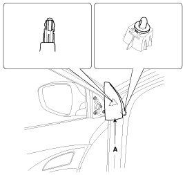
2. After loosening the mounting screws, then remove the front door trim (A).
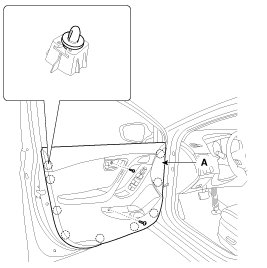
3. Remove the inside handle cage (A).
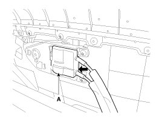
4. Disconnect the connectors (A).
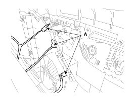
5. Installation is the reverse of removal.
NOTE:
- Make sure connectors are connected properly and each rod is connected securely.
- Make sure the door locks/unlocks and opens/closes properly.
- Replace any damaged clips.
Inside Handle Replacement
1. Remove the front door trim.
2. After loosening the mounting screws, then remove the inside handle (A).
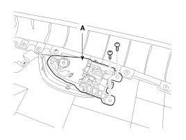
3. Installation is the reverse of removal.
NOTE:
- Make sure the door locks/unlocks and opens/closes properly.
- Replace any damaged clips.
Glass Replacement
1. Remove the front door trim.
2. Remove the front door belt inside weatherstrip (A).

3. Remove the glass mounting hole plug (B).
CAUTION:
- Use the door switch to align the mounting hole/bolt with the hole in the door.
- If unable to operate the window motor, remove the motor and align the hole by hand.
- Be careful not to drop the glass and/or scratch the glass surface.
4. Carefully adjust the glass (A) until you can see the bolts, then loosen them. Separate the glass from the glass run and carefully pull the glass out through the window slot.
Tightening torque:
3.9 - 2.9 N.m (0.4 - 1.2 kgf.m, 11.8 - 8.7 lb-ft)

5. Installation is the reverse of removal.
NOTE:
- Roll the glass up and down to see if it moves freely without binding.
- Adjust glass position as needed.
- Make sure the door lock and opens properly.
- Replace any damaged clips.
Speaker Replacement
1. Remove the front door trim.
2. Disconnect the speaker connector (B).
3. After loosening the mounting screws, then remove the speaker (A).
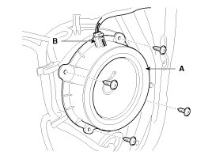
4. Installation is the reverse of removal.
NOTE:
- Use sheet metal screws to secure the speaker.
- Replace any damaged clips.
- Make sure the door locks/unlocks and opens/closes properly.
- Make sure connectors are connected properly and each rod is connected securely.
Power Window Motor Replacement
1. Remove the front door trim.
2. Disconnect the power window motor connector (B).
3. After loosening the mounting screws, then remove the power window motor (A).
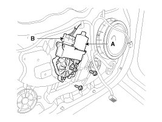
4. Installation is the reverse of removal.
NOTE:
- Grease should be applied to areas where there is rotational parts and springs.
- Roll the glass up and down to see if it moves freely without binding.
- Replace any damaged clips.
- Make sure the door locks/unlocks and opens/closes properly.
Door Module Assembly Replacement
1. Remove the following parts:
A. Front door trim
B. Window glass
C. Outside handle
2. Loosen the mounting bolt (A).
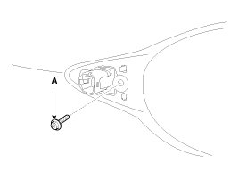
3. Disconnect the front door main connector (A).
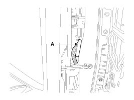
4. After loosening the door module mounting bolts, then remove the front door module (A).
Tightening torque:
6.9 - 10.8 N.m (0.7 - 1.1 kgf.m, 5.1 - 8.0 lb-ft)
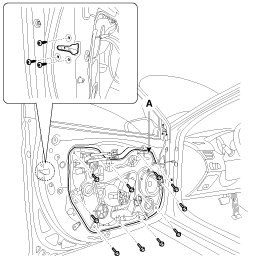
5. Disconnect the connectors and door module wiring harness (A).
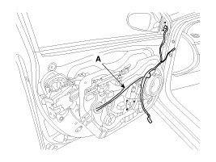
6. Installation is the reverse of removal.
NOTE:
- The area of whole parts should be applied with sufficient grease.
- Make sure connectors are connected properly and each rod is connected securely.
- Make sure the door locks/unlocks and opens/closes properly.
Outside Handle Replacement
1. Remove the front door trim.
2. Remove the hole plug (B).
3. After loosening the mounting bolt, then remove the outside handle cover (A).
Tightening torque:
0.7 - 0.5 N.m (0.07 - 0.1 kgf.m, 1.0 - 0.7 lb-ft)

4. Remove the outside handle (A) by sliding it rearward.

5. Disconnect the outside handle connector (A).

6. Installation is the reverse of removal.
NOTE:
- Make sure the door locks/unlocks and opens/closes properly.
- Make sure the door locks and opens properly.
Door Latch Replacement
1. Remove the following items :
A. Front door trim
B. Window glass
C. Outside handle
2. Loosen the mounting bolt (A).
3. Disconnect the front door main connector (A).
4. After loosening the door module mounting bolts, then remove the front door module (A).
Tightening torque:
6.9 - 10.8 N.m (0.7 - 1.1 kgf.m, 5.1 - 8.0 lb-ft)
5. Remove the door latch wiring (A).
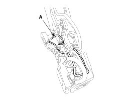
6. Disconnect the connector (B).
7. Remove the front door latch assembly (A).
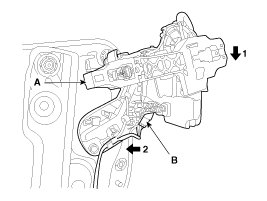
8. Installation is the reverse of removal.
NOTE:
- Make sure the connector is connected properly.
- Make sure the door locks/unlocks and opens/closes properly.
- Replace any damaged clips.
Door Side Weatherstrip Replacement
1. Loosen the checker mounting bolts.
2. Detach the clips, then remove the front door side weatherstrip (A).
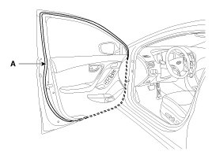
3. Installation is the reverse of removal.
NOTE:
- Replace any damaged clips.
Adjustment
Glass Adjustment
NOTE:
- Check the glass run channel for damage or deterioration, and replace them if necessary.
1. Remove the following parts:
A. Front door quadrant inner cover.
B. Front door trim.
2. Remove the glass mounting hole plug (B).
3. Carefully move the glass (A) until the glass mounting bolts are visible, then loosen them.
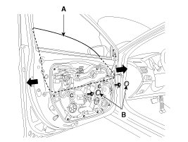
4. Check that the glass moves smoothly.
Door Position Adjustment
NOTE:
- After installing the door, check for a flush fit with the body, then check for equal gaps between the front, rear, and bottom, door edges and the body. Check that the door and body edges are parallel. Before adjusting, replace the mounting bolts.
1. Check that the door and body edges are parallel.
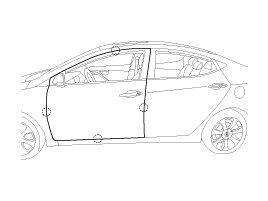
2. Place the vehicle on a firm, level surface when adjusting the doors.
3. Adjust at the hinges (A) :
A. Loosen the door mounting bolts slightly, and move the door in or out until it aligns flush with the body.
B. Loosen the hinge mounting bolts slightly, and move the door backward or forward, up or down as necessary to equalize the gaps.
C. Place a shop towel on the jack to prevent damage to the door when adjusting the door.
Tightening torque:
(B) : 21.6 - 26.5 N.m (2.2 - 2.7 kgf.m, 15.9 - 19.5 lb-ft)
(C) : 33.3 - 41.2 N.m (3.4 - 4.2 kgf.m, 24.6 - 30.4 lb-ft)
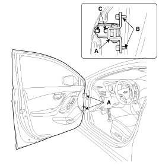
4. Grease the pivot portions of the hinges indicated.
5. Check for water leaks.
Door Striker Adjustment
Make sure the door latches securely without slamming it. If necessary adjust the striker (A): The striker nuts are fixed. The striker can be fine adjusted up or down, and in or out.
1. Loosen the screws (B) just enough for the striker to move.
Tightening torque:
(B) : 16.7 - 21.6 N.m (1.7 - 2.2 kgf.m, 12.3 - 15.9 lb-ft)
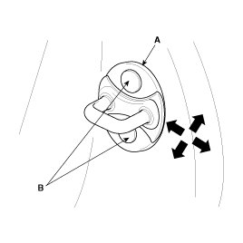
2. Tap on the striker with a plastic hammer to adjust the striker. The striker will not move much, but will give some adjustment.
3. Hold the outer handle out, and push the door against the body to be sure the striker allows a flush fit. If the door latches properly, tighten the screws and recheck.